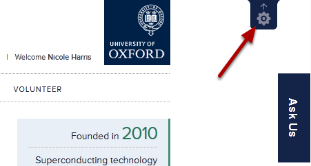
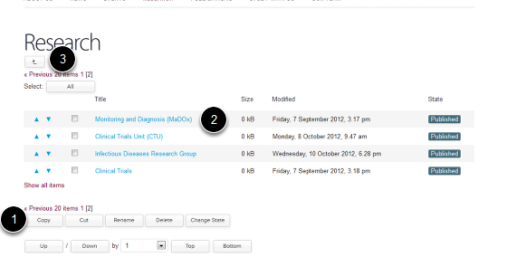

The tool bar at the top of the screen gives you access to the various editing functions that you will need. This tutorial looks at the Contents, View and Edit buttons. These are the buttons that you will be using most when you make changes to your site.
When you Log In to your site your should see a dark blue tool bar at the screen. If you can’t see this look in the top right hand corner of the screen for a cog icon:
Click on the cog icon to make your toolbar visible.
View is the default option when you log in showing you what the webpage looks like. If you are making changes to your webpage in the Editing or Contents interface you can click on View to see what your alterations look like. (Remember to save your changes before clicking on View.)
Clicking on the Edit button gives you access to the Editing interface of the page that you are currently viewing:
You can now make changes to the different parts of your webpage. You will see that the Editing interface divides the webpage up into different sections. Tutorials are available on how to edit each section of your page.
Clicking on the Contents button gives you a view of the page structure of the part of the website that you are currently on. For example clicking on Contents in the Research section of the website above shows you a list of all the Research Theme and Research Group pages:
You will probably not need to use the Contents interface for most of your editing work. If you have any doubts about how this works please ask us.